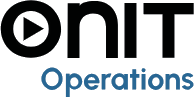

Onit S.p.A., the company the group started from. Today it works on AI applications,
business-process digitalisation and Business Analytics consulting.
Onit Analyticsmy teamBusiness Analytics, data warehouse and BI
BU DWHSANPRI · Product SpecialistData warehouse and Qlik dashboards for private healthcare
Group companies
ICT solutions for running hospitals, clinics and outpatient centres.

Consulting and solutions to digitalise operations and the supply chain.
Cybersecurity, networking, data centre and collaboration services.
Benefit company building custom solutions for businesses and people.
Role
Product SpecialistPosition
Oct 2026Start date
ApprenticeshipProfessional training contract
CesenaOffice
The DWHSANPRI unit builds and maintains data warehouses and Qlik Cloud dashboards for private healthcare providers.
Clinical and administrative staff use these dashboards to follow their KPIs.
Qlik CloudSQLData warehouseHealthcare data
Path to this role
Jul 2024
BSc in Biotechnology
University of Bologna, 110/110 cum laude
Feb – Jul 2026
Neotron internship
SQL on a LIMS, risk models, dashboards
Sep 2026
MSc in Bioinformatics
University of Bologna, 110/110 cum laude
Oct 2026
Onit, Product Specialist
Healthcare data warehouse and BI
Training plan
The skills set out in my apprenticeship plan. Select an area.
Analysis of user needs
Collect the information needs of clinical and administrative users.
Turn requests into clear requirements for data and reports.
Dimensional modelling
Model information needs with the Dimensional Fact Model (DFM).
Design ROLAP databases on MySQL, HP Vertica and PostgreSQL.
Extraction, transformation, loading
Analyse and develop ETL procedures with Pentaho, Power Query M and Qlik.
Reports and dashboards
Build reports and dashboards with Qlik, SAP BusinessObjects and Microsoft BI.
From KPI to query
Translate the meaning of each KPI into SQL (ANSI-92) queries.
Quality and advanced analysis
Check data through unit tests.
Analyse data patterns for machine learning applications.
At Neotron I extracted laboratory data with SQL, modelled it and reported risk through dashboards.
Onit uses the same chain (source data, model, KPI, dashboard) in healthcare.